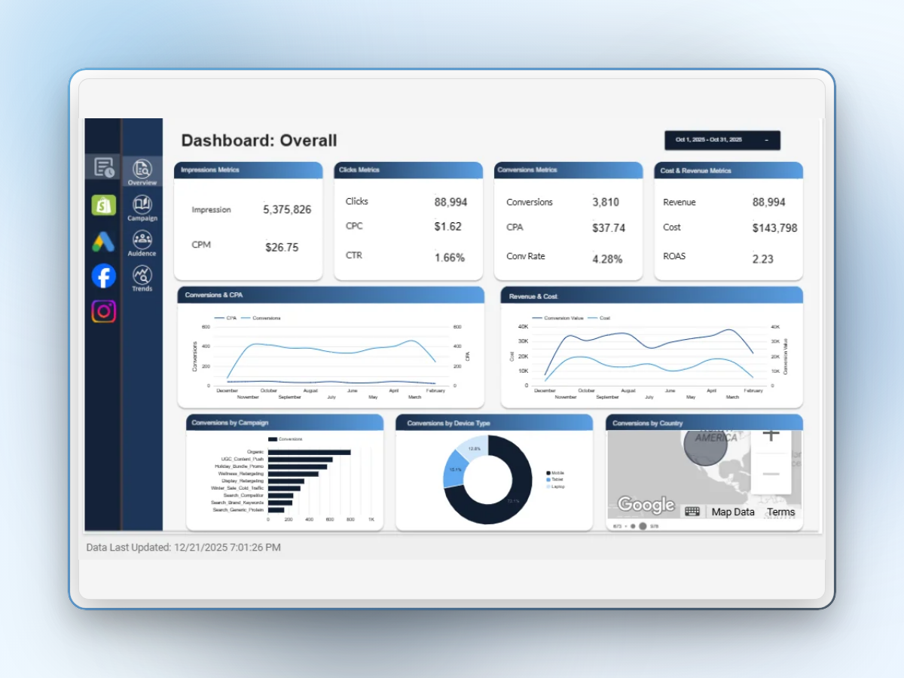

Built ML-powered churn prediction system improving AUC from 0.71 → 0.84 and enabling retention decisions
The company was experiencing rising customer churn with no system to identify at-risk users before they left.
Retention campaigns were applied broadly — wasting budget on low-risk users while missing the highest-risk segments entirely.
The business needed a predictive system that could identify churn-prone users early and enable targeted, cost-effective interventions
rather than blanket campaigns.
Built an end-to-end pipeline from raw transactional and behavioral data sources to a prediction layer that feeds directly into the retention workflow.
The core challenge was severe class imbalance — churned users represented less than 12% of the dataset. A naive model would achieve high accuracy by simply predicting "no churn" for everyone.
The model outputs feed into a Looker Studio dashboard providing the retention team with actionable views: risk distribution heatmaps, segment breakdowns, and per-user churn probability scores with contributing factors.
This dashboard tracks marketing performance across campaigns, including impressions, clicks, conversions, and ROAS. It helps identify high-performing channels and optimize spend based on actual conversion impact.

The model's risk scores were integrated into the retention team's workflow.
Instead of applying blanket campaigns, the team focused retention efforts on the top 10% highest-risk users,
delivering personalized outreach based on the top contributing factors identified by SHAP analysis.
This shifted the approach from reactive (post-churn surveys) to proactive, prediction-driven retention.
High-risk users identified in decile 10 received priority onboarding support and personalized feature guidance.